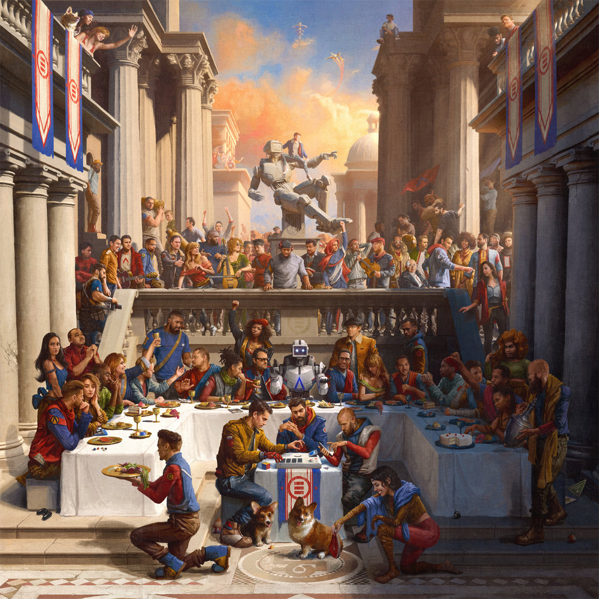
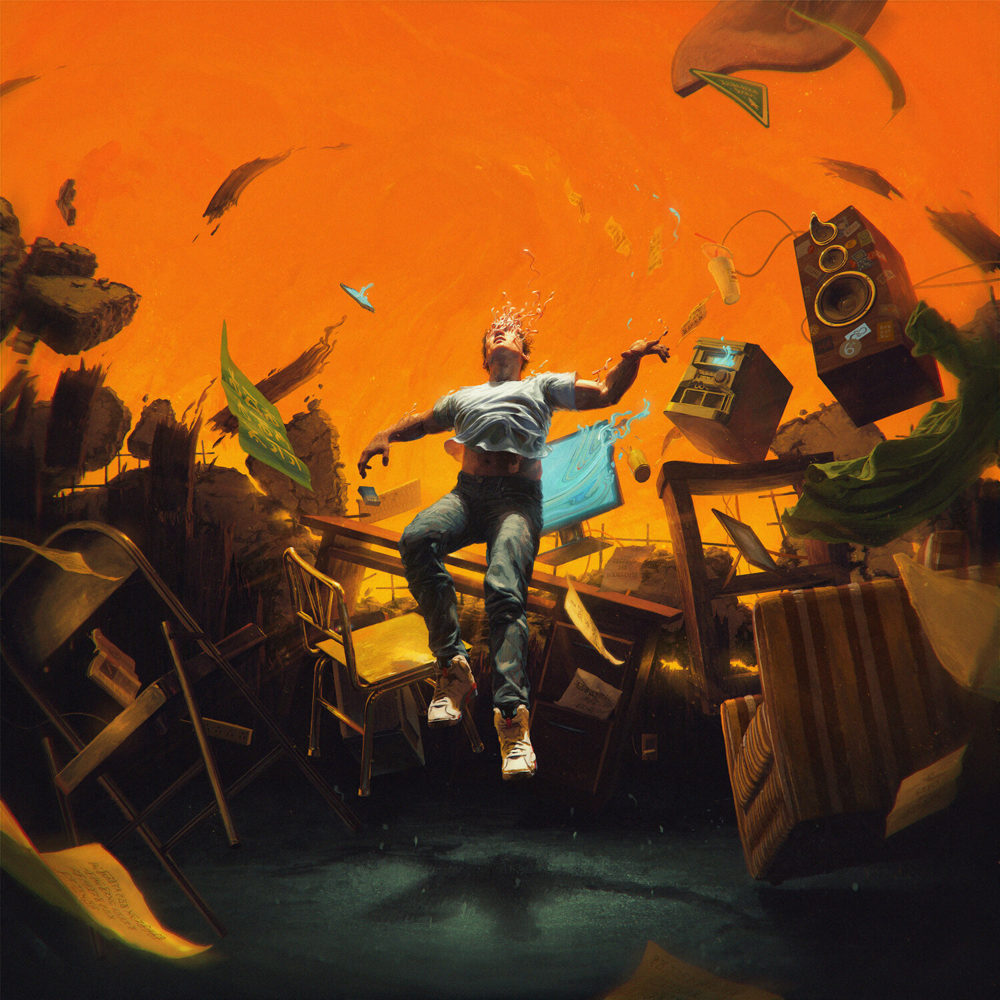
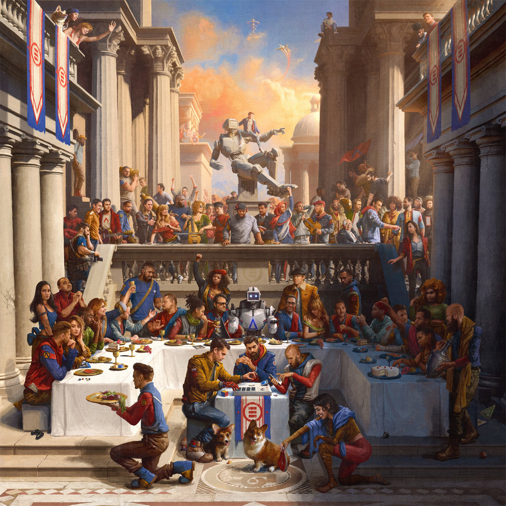
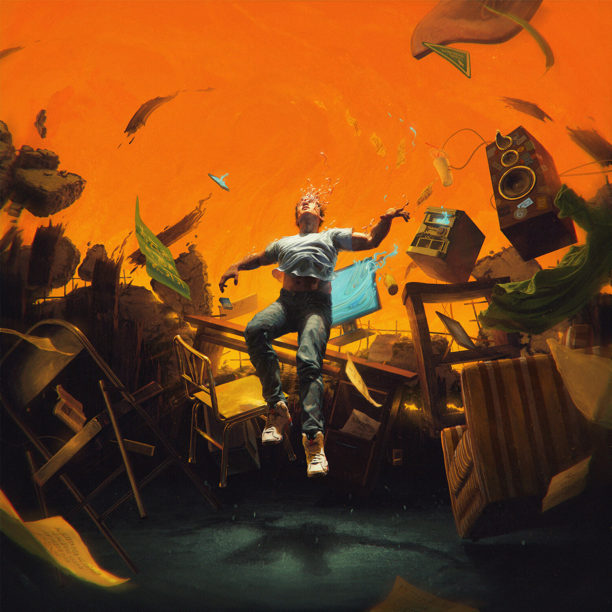

Robert Bryson Hall is an American rapper, singer, songwriter and music producer better known by his stage name Logic. Growing up, he witnessed his brothers selling drugs, his father buying those drugs, his alcoholic mother and sisters getting beaten up by men. However, even at that age, he tried to see the positivity of the situation and made those experiences a lesson as to what not to do with his own life. To escape his abusive mother, he left home when he was 17 years old and took up two odd jobs. He found relief through music, and started to express himself with his raps. He doesn't shy away from writing about his experiences in his songs, which makes most of his songs extremely personal, but he never glorifies his tumultuous upbringing. He has been heavily influenced by Frank Sinatra's vocal jazz, even though he is more into hip-hop music. Quentin Tarantino has been another big influence on him. He got recognition through his mixtapes, 'Young, Broke & Infamous' and the 'Young Sinatra' trilogy. Both his studio albums, 'Under Pressure' and 'The Incredible True Story', have received critical and commercial success.